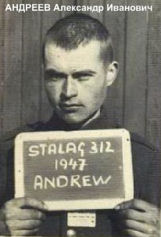
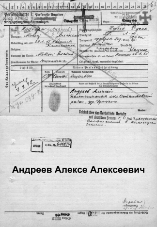
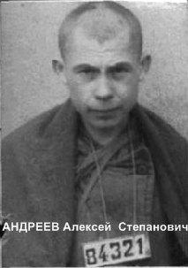
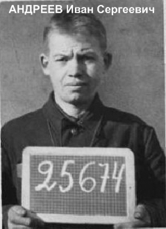

А
АНАНЬЕВ Анатолий Алексеевич родился 23 октября 1921 г. в д. Паньсково Заручьевского с/с Горицкого (Кимрского) р-на Калининской области. Крестьянин. Православный. Русский. Мать Степанова Мария. Отец Алексей Васильевич.
В армию призван Горицким РВК 15 апреля 1941 г. Рядовой 469-го стрелкового полка. Попал в плен 13 июля 1941 г. под г. Славута Хмельницкой области, Украина. Регистрацию прошёл в Нижней Силезии, в шталаге № 308 Нойхаммер-Вест. Номер регистрации 44922. 30 сентября 1942 г. направлен в лагерный лазарет. Погиб в лазарете 14 ноября 1942 г. Похоронен на лагерном кладбище. После войны перезахоронен на специальном интернациональном кладбище военнопленных неподалёку от г. Жагань, гмина Свентошув, у шоссе их Жагани в Илову, Любуское воеводство, Республика Польша.
По материалам ЦАМО РФ числится пропавшим без вести в сентябре 1944 г.
АНАНЬЕВ Василий Петрович родился 18 декабря 1914 г. в д. Верхнее Большемякишевского с/с Сандовского р-на Калининской области. Крестьянин. Православный. Русский. Мать Кузьмина. Жена Мария.
В армию призван Сандовским РВК. Рядовой 393-го стрелкового полка. В плен попал 20 июля 1941 г. под Оршей в Белоруссии. Регистрацию прошел в шталаге № 310 Витцендорф. Номер регистрации 35540. Погиб в лагере 8 февраля 1942 г. Похоронен в братской могиле на мемориальном кладбище советских военнопленных Витцендорф у п. Витцендорф, р-н Зольдау-Фаллингбостель, земля Нижняя Саксония.
АНАНЬЕВ Сергей Васильевич родился 18 июля 1920 г. в с. Юрьевское Калининского р-на Калининской области. Шофёр. Православный. Русский. Довоенный адрес: г. Калинин, ул. Володарского, д. 40, кв. 4. Матери Мироновой Евдокии.
В армию призван Центральным РВК г. Калинина в 1941 г. Рядовой 29-го артиллерийско-пулемётного батальона. В плен попал 7 июля 1941 г. под г. Дзержинск в Белоруссии. Регистрацию прошел в шталаге № 310 Витцендорф. Номер регистрации 32072. Лишён статуса военнопленного и передан администрации концлагеря СС Бухенвальд. Погиб в лагере 7 апреля 1942 г. Похоронен в братской могиле на мемориальном лагерном кладбище жертв нацизма Бухенвальд, округ Веймар, земля Тюрингия.
АНАСЕНКОВ Василий Михайлович родился 10 декабря 1914 г. в д. Корняшово Аксентьевского с/с Ильинского (Западнодвинского) р-на Смоленской (Калининской) области. Крестьянин, тракторист. Православный. Русский. Мать Андреева Анна. Отец Михаил Павлович.
В армию призван Ильинским РВК. Рядовой строительного батальона. Попал в плен 3 июня 1941 г. под Минском в Белоруссии. Регистрацию прошёл в шталаге № 310 Витцендорф. Номер регистрации 34933. Переведён в шталаг X B Сандбостель. Лишёнстатуса военнопленного и передан администрации концлагеря СС Нойенгамме. Погиб в лагере 25 февраля 1942 г. Похоронен в братской могиле на мемориальном лагерном кладбище советских военнопленных Нойенгамме, федеральная земля Вольный город Гамбург.
В Книге памяти, Западнодвинский р-н, числится пропавшим без вести в ноябре 1944 г.
АНДРЕЕВ Александр Андреевич родился 10 сентября 1907 г. в д. Рьяново Емельяновского (Старицкого) р-на Калининской области. Крестьянин. Православный. Русский. Мать Лотова.
В армию призван Емельяновским РВК в 1941 г. Рядовой. Попал в плен 2 сентября 1941 г. под Смоленском. Регистрацию прошел в шталаге № 318 Ламсдорф (Гросс-Розен). Номер регистрации 2601. Погиб в лагере 9 февраля 1942 г. Причина в документах не указана. Похоронен в братской могиле на мемориальном кладбище советских военнопленных на полигоне Ламсдорф в г. Ламбиновице, Ополськое воеводство, Республика Польша.
АНДРЕЕВ Александр Иванович родился в 23 июля 1918 г. в д. Новины Есеновичского (Вышневолоцкого) р-на Калининской области. Крестьянин. Православный. Русский. Жена Анастасия.
В армию призван Есеновичским РВК в 1941 г. Рядовой. Попал в плен 26 июня 1941 г. под г. Двинском (Даугавпилс, Латвия). Регистрацию прошел в шталаге № 312 Торн. Номер регистрации 1947. Погиб в лагере 25 июня 1942 г. Перезахоронен в братской могиле на кладбище советских военнопленных на военном полигоне «Глинки» в д. Глинки, гмина Велька Нешавка, Куявско-Поморское воеводство, Республика Польша.
АНДРЕЕВ Александр Никифорович родился в 1915 г. в д. Михайловка Луковниковского (Старицкого) р-на Калининской области.
В армию призван Луковниковским РВК. Младший лейтенант 919-го стрелкового полка. Попал в плен. Погиб в дулаге № 184 (230) Вязьма 24 января 1942 г. Похоронен в братской могиле на территории лагеря в г. Вязьма, ул. Репина, Смоленская область.
АНДРЕЕВ Алексей Алексеевич родился 20 января 1915 г. в д. Урицкое Урицкого с/с Осташковского р-на Калининской области. Крестьянин, продавец. Православный. Русский. Мать Медведева. Глаза голубые. Брюнет.
В армию призван Осташковским РВК в 1940 г. Лейтенант 190-го стрелкового полка. Попал в плен 25 июня 1941 г. под г. Каунас, Литва. Регистрацию прошел в шталаге № 62 Хаммельбург. Номер регистрации 730. Погиб в лагере 7 сентября 1942 г. Похоронен в братской могиле на мемориальном лагерном кладбище советских военнопленных Хаммельбург, земля Бавария.
Занесен в Книгу памяти офицерского лагеря советских военнопленных № 62 Хаммельбург, подготовленную Народным союзом Германии по уходу за военными могилами и Объединением «Саксонские мемориалы».
В Книге памяти, Осташковский р-н, числится пропавшим без вести в июне 1941 г.
АНДРЕЕВ Алексей Андреевич родился 20 августа 1921 г. в д. Милоксово Серёжинского (Андреапольского) р-на Калининской области. Сапожник. Православный. Русский. Мать Иванова Ольга Ивановна.
В армию призван Серёжинским РВК. Рядовой 218-го артиллерийского паркового дивизиона 220-й стрелковой дивизии. Попал в плен 23 июля 1941 г. под г. Могилевом в Белоруссии. Регистрацию прошел в шталаге № 304 Цайтхайн. Номер регистрации 20850. Погиб в лагере 23 ноября 1942 г. Похоронен на мемориальном лагерном кладбище советских военнопленных Цайтхайн I/Руссенфридхоф, блок 6, могила № 275, в г. Риза, земля Саксония (КПЦ, с. 19).
АНДРЕЕВ Алексей Арсентьевич родился в 1912 г. в д. Родионово Кумординского с/с Медновского (Калининского) р-на Калининской области. Крестьянин. Православный. Русский. Адресат для переписки: Арсеньев Андрей. Адрес тот же.
В армию призван Медновским РВК. Сержант 838-го стрелкового полка. Попал в плен 19 августа 1941 г. под Медведево. Регистрацию прошёл в шталаге № 302 Гросс Борн-Вестфаленхоф (Редеритц). Номер регистрации 20850. Погиб в лагере 14 декабря 1941 г. Похоронен в братской могиле на специальном кладбище польских и советских военнопленных неподалеку от г. Надажице, у шоссе Сыпнево-Надажице, Западно-Поморское воеводство, Республика Польша.
АНДРЕЕВ Алексей Степанович родился 15 марта 1920 г. в д. Рогово (название деревни - так в документе) Осташковского р-на Калининской области. Крестьянин. Православный. Русский.
В армию призван Осташковским РВК. Рядовой 79-го артиллерийского полка. Попал в плен 7 июля 1941 г. под Красиловым в Смоленской области. Регистрацию прошел в шталаге II A Нойбранденбург. Номер регистрации 84321. Погиб в филиале лагеря Клиссендорф 21 ноября 1941 г. Похоронен в братской могиле военнопленных на лагерном кладбище Байдендорф у г. Нойбранденбург, земля Мекленбург-Передняя Померания.
АНДРЕЕВ Андрей Петрович родился 7 октября 1921 г. в д. Забелье Бушевецкого с/с Бологовского р-на Калининской области. Крестьянин, слесарь. Православный. Русский. Мать Евдокия.
В армию призван Бологовским РВК. Сержант 601-го артиллерийского полка. Попал в плен 22 июля 1941 г. под г. Могилёв, Белоруссия. Регистрацию прошёл в шталаге № 310 Витцендорф. Номер регистрации 35901. Погиб в лагере в январе 1942 г. Похоронен в братской могиле на мемориальном лагерном кладбище советских военнопленных Витцендорф у п. Витцендорф, р-н Зольдау-Фаллингбостель, земля Нижняя Саксония.
АНДРЕЕВ Владимир Андреевич родился в 1926 г. в г. Западная Двина, ул. Ленина. 28, Октябрьского (Западнодвинского) р-на Калининской области. Русский.
Погиб в дулаге № 184 (230) Вязьма 27 сентября 1942 г. Похоронен в братской могиле на территории лагеря в г. Вязьма, ул. Репина, Смоленская область.
АНДРЕЕВ Владимир Николаевич родился 28 августа 1919 г. в д. Шолонки Сарычевского с/с Горицкого (Кимрского) р-на Калининской области. Крестьянин. Православный. Русский. Мать Анастасия.
В армию призван Горицким РВК. Рядовой 91-го пограничного полка. Попал в плен 23 июня 1941 г. под Пархачами. Регистрацию прошел в шталаге VI B Нойверзен, земля Нижняя Саксония. Номер регистрации 33744. 29 августа 1941 г. переведён в шталаг XII A Лимбург. Погиб в лагере 8 ноября 1941 г. Похоронен в братской могиле на лагерном кладбище военнопленных в г. Лимбург, р-н Висбаден, земля Гессен.
АНДРЕЕВ Дмитрий Кузьмич родился в 1909 г. в д. Пруды Хитицкого с/с Кировского (Селижаровского) р-на Калининской области. Крестьянин. Православный. Русский. Жена Анна.
В армию призван Кировским РВК в 1941 г. Рядовой 872-го стрелкового полка. Попал в плен 27 августа 1941 г. под г. Почеп Брянской области. Регистрацию прошел в Нижней Силезии, в шталаге № 308 Нойхаммер-Вест. Номер регистрации 50364. Погиб в шталаге № 318 Ламсдорф Гросс-Розен) 31 мая 1942 г. Похоронен в братской могиле на мемориальном кладбище советских военнопленных на полигоне Ламсдорф в г. Ламбиновице, Опольское воеводство, Республика Польша.
АНДРЕЕВ Иван Андреевич родился 12 июля 1908 г. в с. Сахарово Калининской области. Крестьянин. Православный. Русский.
В армию призван Калининским ОВК в 1941 г. Рядовой-пехотинец. Попал в плен 12 августа 1941 г. под г. Шимском, Ленинградская область. Регистрацию прошел в шталаге III C Альт-Древитц/Кюстрин (Костшин. Номер регистрации 3922. Погиб в лагере от хронического катара желудка и воспаления лёгких 30 июня 1943 г. Похоронен в братской могиле на специальном кладбище советских военнопленных неподалёку от г. Костшин, р-н Джевице, в 1,5 км по шоссе от г. Смолар, Любуское воеводство, Республика Польша.
АНДРЕЕВ Иван Андреевич родился в 1910 г. в д. Якшино Мартюховского с/с Торопецкого р-на Калининской области. Крестьянин. Убеждённый католик. Русский. Мать Михайлова Агафья. Жена Наталья.
В армию призван Торопецким РВК. Рядовой 465-го стрелкового полка Попал в плен 1 июля 1942 г. под г. Сальск Ростовской области. Регистрацию прошел в шталаге № 358 Житомир. Номер регистрации 49600. 15 декабря 1942 г. переведён в шталаг XII F Больхен/Форбах. 20 декабря 1943 г. из лагерной рабочей команды переведён в шталаг XII F ZL Иоханнис-Баннберг. Оттуда направлен в лагерный лазарет Больхен. Погиб в лазарете 7 мая 1943 г. Похоронен в братской могиле на мемориальном лагерном кладбище советских военнопленных в г. Булэ (немецкий Больхен) в 26 км от г. Мец, департамент Мозель, Французская Республика.
АНДРЕЕВ Иван Сергеевич родился 25 февраля 1921 г. в д. Бурцево Титовского с/с Кимрского р-на Калининской области. Крестьянин. Православный. Русский. Мать Бакланова.
В армию призван Кимрским РВК. Рядовой 718-го стрелкового полка. Попал в плен 29 июня 1941 г. под г. Броды в Западной Украине. Регистрацию прошел в шталаге № 310 Витцендорф. Номер регистрации 25674. Погиб в лагере12 июня 1942 г. Похоронен в братской могиле на мемориальном лагерном кладбище советских военнопленных Витцендорф у п. Витцендорф, р-н Зольдау-Фаллингбостель, земля Нижняя Саксония.
АНДРЕЕВ Иван Тихонович родился в 1910 г. в д. Ламыгино Новосокольнического р-на Калининской (Псковской) области. Крестьянин. Православный. Русский. Мать Наумова. Жена Матрена Фёдоровна.
В армию призван Новосокольническим РВК. Рядовой 705-го стрелкового полка. Попал в плен 26 августа 1941 г. под г. Старая Русса Ленинградской (Новгородской) области. Регистрацию прошел в шталаге № 326 Фореллькруг/Зенне. Номер регистрации 13459. 25 ноября 1941 г. переведен в шталаг VI A Хемер при шахте «Наш Фритц-667». Погиб в лагере 25 января 1942 г. от сердечной недостаточности. Похоронен в братской могиле на лагерном кладбище советских военнопленных Руссенфридхоф/ Хемер I Хёклингсер-Вег, поле 42, участок 18, у г. Дортмунд, земля Северный Рейн-Вестфалия.
АНДРЕЕВ Лаврентий Андреевич родился 31 августа 1919 г. в д. Студеница Жуковского с/с Ленинского (Андреапольского) р-на Калининской области. Крестьянин. Православный. Русский. Мать Ильина.
В армию призван Ленинским РВК в 1941 г. Рядовой 172-го стрелкового полка. Попал в плен 8 июля 1941 г. Регистрацию прошел в шталаге № 310 Витцендорф. Номер регистрации 32091. Лишен статуса военнопленного и переведен в концлагерь СС Нойенгамме. Погиб в лагере 31 мая 1942 г. от катара желудка. Похоронен в братской могиле советских военнопленных на мемориальном лагерном кладбище Нойенгамме, федеральная земля Вольный город Гамбург.
В Книге памяти, Андреапольский р-н, числится пропавшим без вести в январе 1943 г.
(продолжение следует)
|